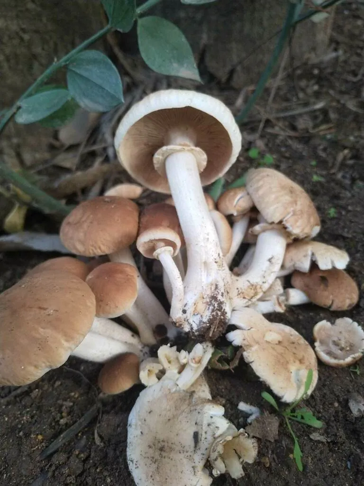

真菌 · 真菌界
茶树菇 Agrocybe cylindracea

茶树菇的菌盖淡褐色、菌柄细长，常丛生于油茶等阔叶树枯木上，柄脆味鲜，干制后香气浓郁，是常见的栽培食用菌。
- 分类
- 门担子菌门纲伞菌纲目伞菌目科球盖菇科属田头菇属
- 栖息环境
- 油茶、杨、柳等阔叶树枯木与树桩，栽培用木屑和茶籽壳
- 地理分布
- 中国南方福建、江西、湖南等地，现广泛栽培
- 保护级别
- 暂无评估（IUCN 未评估，栽培食用菌）
物种志
茶树菇是担子菌门球盖菇科的真菌，子实体丛生。菌盖初期半球形，后平展，直径 3–10 cm，表面淡褐色、黄褐色至深褐色，中央颜色较深，光滑，边缘有时开裂；菌肉白色至淡黄色，较薄。菌褶直生或弯生，白色至淡黄色，成熟后变为褐色。菌柄细长，长 5–15 cm，直径 0.5–1.5 cm，白色至淡褐色，有纤维状纹理，上部有膜质菌环。孢子印褐色。
茶树菇生于油茶、杨、柳等阔叶树的枯木和树桩上，靠分解木材生长，在中国南方分布广泛，福建、江西、湖南等地栽培较多。它原为野生菌，因常长在油茶树上而得名“茶树菇”，如今主要用木屑、棉籽壳和茶籽壳作培养料栽培。茶树菇菌柄脆嫩、味道鲜美，干制后香气更浓，适合炖汤、干锅和炒食；富含蛋白质、氨基酸和多糖，是市场上常见的干制食用菌之一。
形态与习性
- 菌盖直径 3–10 cm，淡褐至深褐色
- 菌褶白色至淡黄，成熟后褐色
- 菌柄细长，长 5–15 cm，柄脆
- 菌环膜质，位于菌柄上部
- 孢子印褐色
- 栽培木屑、棉籽壳与茶籽壳培养料
- 食用性可食，干制后香气浓郁
趣味知识
- 茶树菇因常长在油茶树的枯木上而得名。
- 它的菌柄细长脆嫩，是主要吃的部分。
- 干茶树菇比鲜的香气更浓，常用来炖汤和做干锅。
- 栽培茶树菇常用茶籽壳作培养料，产自油茶产区。